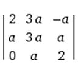
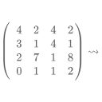

|
Wie berechnet man die Jordan'sche Normalform? |
Recent Posts all posts

|
Wie berechnet man die Cholesky-Zerlegung? |
|  |
Wie berechnet man das charakteristische Polynom? |
|  |
Wie bestimme ich das Inverse einer Matrix? |
Cleverbot vs. Wolfram|Alpha |